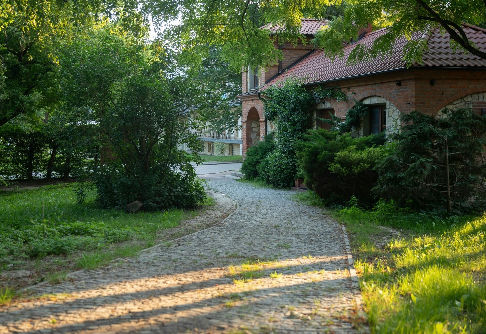
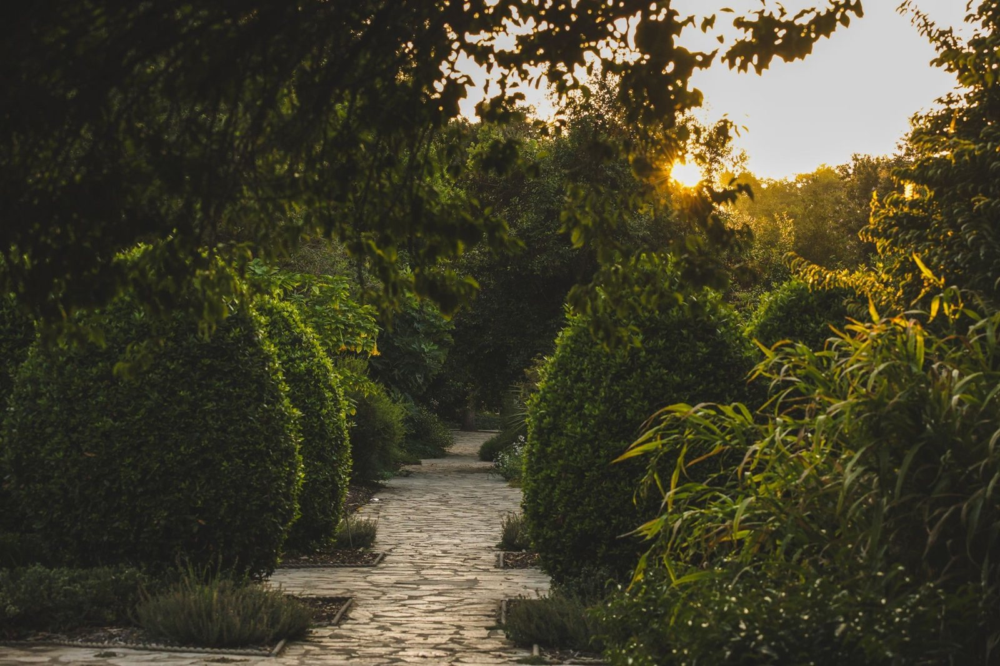
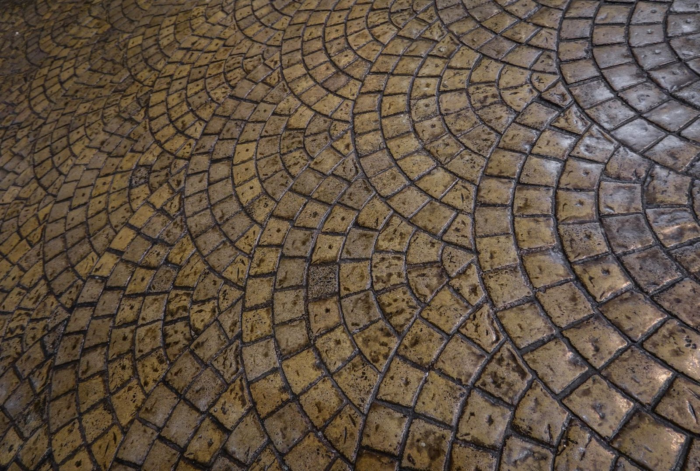
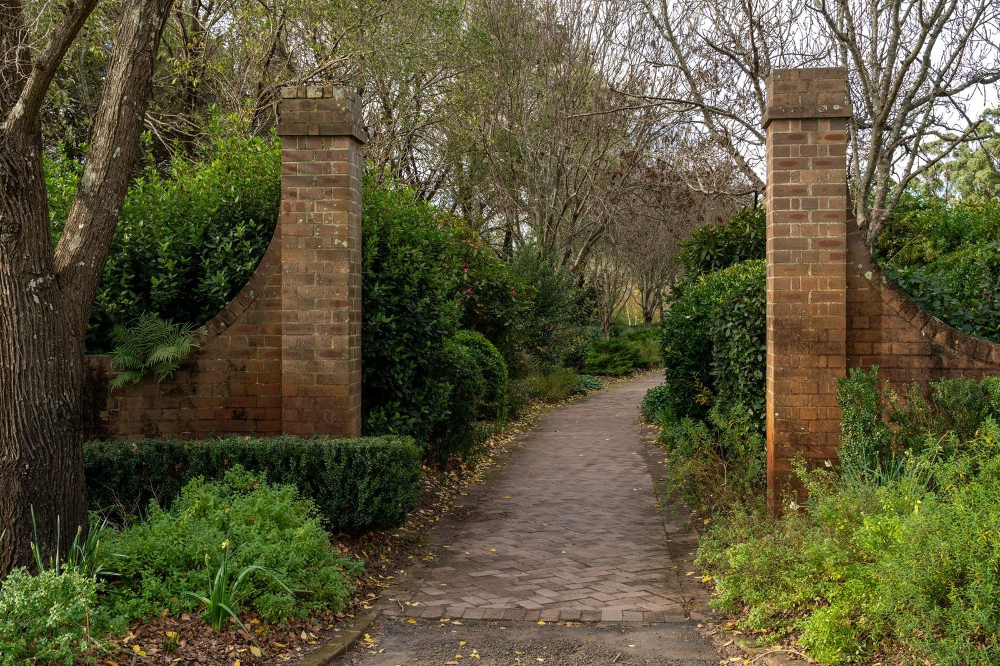
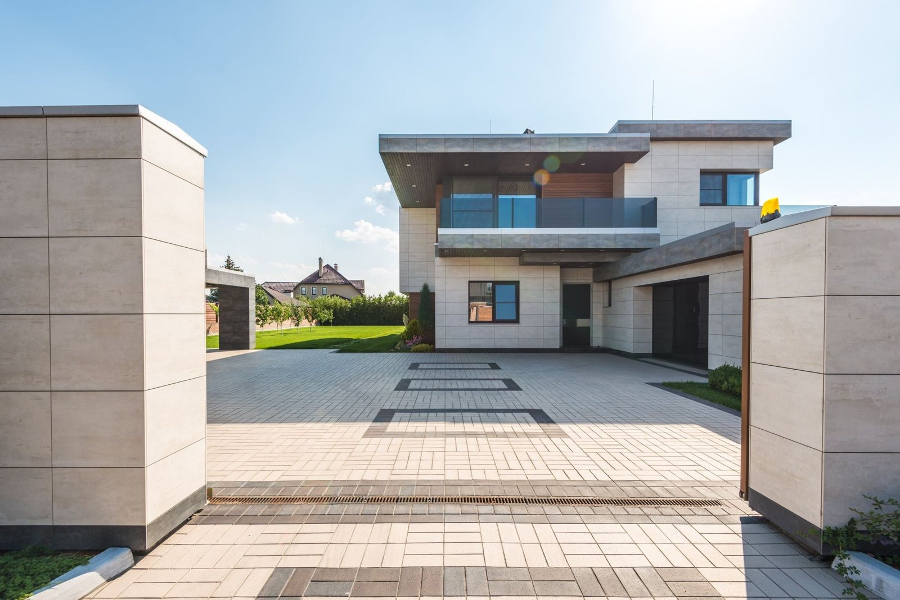

Prosty, przewidywalny proces. Bez niespodzianek i bez naciągania.
Przyjeżdżamy, oglądamy, doradzamy. Bez opłat i bez zobowiązań.
Jasna cena i termin na piśmie - zanim cokolwiek ruszy.
Robimy zgodnie ze sztuką, na czas, dbając o porządek.
Sprzątamy po sobie i dajemy gwarancję na robociznę.
Zakres prac, jaki robimy najczęściej - pełny opis i wycenę znajdziesz niżej.
Kawałek tego, co robimy na co dzień - podjazdy, tarasy i ścieżki z kostki brukowej. Każda nawierzchnia stoi na porządnie przygotowanej podbudowie.





Zadzwoń lub napisz - przyjedziemy, obejrzymy i podamy jasną cenę. Bez zobowiązań.